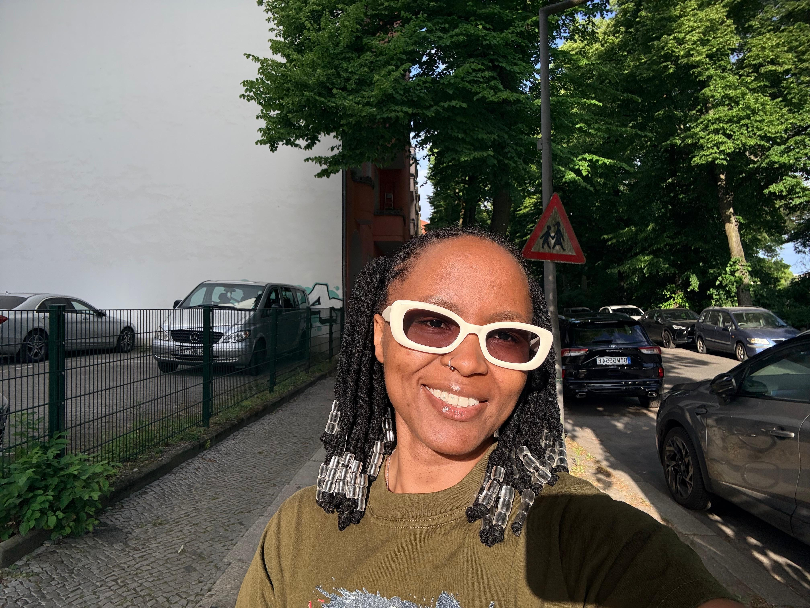

Bachelor of Science in Information Technology | Final Year Student

I am a hardworking and curious final year IT student. I like learning new technologies and I enjoy working in teams. During my studies I have developed a strong interest in web development and database systems, and I have built several small projects both in class and on my own.
Outside of class, I am a member of the university Tech Club where we share ideas, take part in coding challenges and help other students with their computer problems.
| Year | Qualification | Institution |
|---|---|---|
| 2022 - Present | Bachelor of Science in Information Technology | JKUAT |
| 2016 - 2018 | Diploma in Mechanical Engineering | TUK |
My short-term goal is to secure an industrial attachment where I can apply what I have learned in class to real projects and learn from experienced professionals.
In the long term, I would like to become a skilled software developer who builds reliable systems for businesses and institutions, and to keep growing my skills through professional certifications.